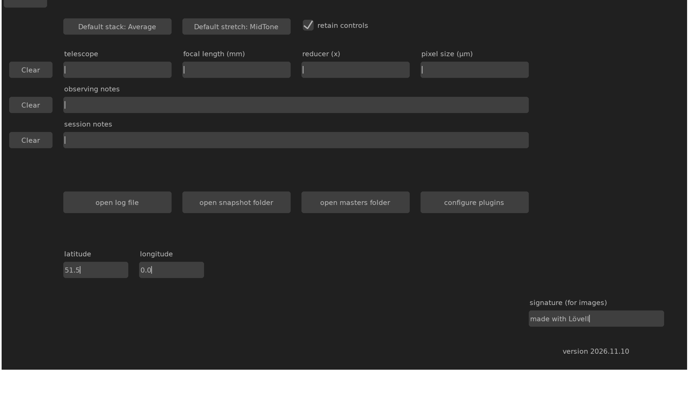

Settings
The Settings page provides a useful home for a number of less-used input fields and buttons.

Defaults
The first button row provides a way to define your preference for the startup values of the Stack and Stretch menus, and also a checkbox which retains all plugin control settings between different observations (but not between separate sessions). Otherwise they are reset to their default initial values for each observation.
Optical system
Some details of the optical system are settable here. Most decent acquisition software will define the camera pixel size in the FITS headers, but may not include the focal length which is a key parameter in plate solving.
Note
If the pixel size is not defined, plate solving will not be able to determine the correct image scale. If focal length is missing, or wrong, plate solving (ASTAP) may attempt a number of different scales and can still correctly solve the image. For all successful solves, the focal length is changed to the solved value and stored in the observation metadata so that it is correct when next loaded.
Observation and Session notes
Short observations notes are shown on the information panel on the main display, and cleared between observations. The may also be shown in some snapshot format.
Short sessions notes are retained for the whole session over multiple observations and, again, shown on the main display page.
Tip
Each of the above items has a Clear button to delete all the input, but this may also be achieved by right-clicking the input box (two-fingered click for touch input devices).
Navigation buttons
The open log file button uses the system's document browser to access the current session log file which is opened in a separate window. The file is located in the Lövell's SAVE directory (see Installation)
The open snapshot folder button provides a fast way to access previous screen snapshots stored in Lövell's SAVE directory in the snapshots folder. It opens with the system file browser in a separate window.
The open masters folder similarly opens the calibration master files folder in the SAVE directory.
The configure plugins button is an internal link to the Plugin Workflow Editor page.
Tip
The workflow editor may also be accessed with the keyboard shortcut command-P.
Location coordinates
Latitude and longitude (negative for west of the meridian) may be entered here. It's essential to do this for the DSO database to show the correct RA and DEC coordinates.
Note
Currnet local time is taken from your system's settings.
Signature for Snapshots
Annotated snapshots include a line for a 'signature'. The text is adjustable here and saved between sessions.
Note
The application version is also shown on this page. Maybe useful if you need to report an issue.